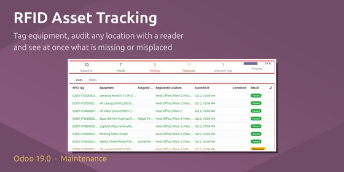

Inventory & Manufacturing apps for Odoo
Odoo add-ons for stock cards, stock valuation, delivery proof, assets and manufacturing cost. 5 apps, 0 free, for Odoo 16 to 20.
 Manufacturing Overhead - Factory Overhead Cost in MRPManufacturing overhead absorbed into the cost of finished goods: a % of component cost or a fixed amount per unit per BOM, posted to the overhead account.
Manufacturing Overhead - Factory Overhead Cost in MRPManufacturing overhead absorbed into the cost of finished goods: a % of component cost or a fixed amount per unit per BOM, posted to the overhead account. Proof of Delivery - Delivery Signature, Photo, GPS by QRElectronic proof of delivery and delivery confirmation by QR code: receiver, quantities, photos, signature and GPS geofence check on the delivery order.
Proof of Delivery - Delivery Signature, Photo, GPS by QRElectronic proof of delivery and delivery confirmation by QR code: receiver, quantities, photos, signature and GPS geofence check on the delivery order.
RFID Asset Tracking - Tags, Audits and Reader APIRFID asset tracking on maintenance equipment: tag assets, track location and holder, audit rooms with a handheld reader, connect readers over a REST API. Stock Card Report - Kardex with Running BalanceStock card, kardex and stock ledger per product and location: opening balance, every move with its running balance, closing balance, on screen and in PDF.
Stock Card Report - Kardex with Running BalanceStock card, kardex and stock ledger per product and location: opening balance, every move with its running balance, closing balance, on screen and in PDF. Stock Journal Entry - Real-time Perpetual InventoryReal-time stock accounting: perpetual inventory journal entries at every receipt, delivery, return and transfer, with per-category and per-warehouse accounts.
Stock Journal Entry - Real-time Perpetual InventoryReal-time stock accounting: perpetual inventory journal entries at every receipt, delivery, return and transfer, with per-category and per-warehouse accounts.